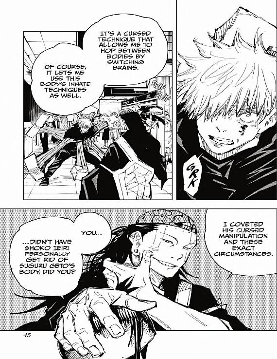
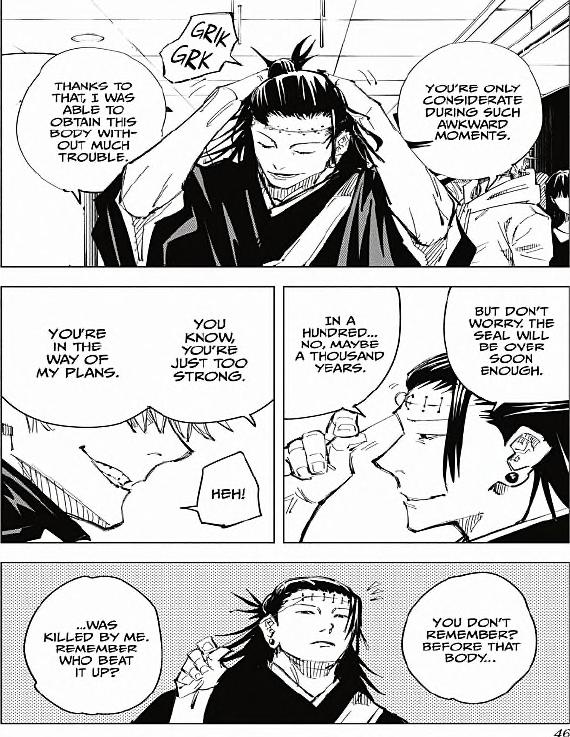

GOJO: GRK
KENJAKU: IT'S A CURSED TECHNIQUE THAT ALLOWS ME TO HOP BETWEEN BODIES SWITCHING BRAINS.
OF COURSE, IT LET'S ME USE THIS BODY'S TECHNIQUES AS WELL.
I COVETED HIS CURSED MANIPULATION AND THESE EXACT CIRCUMSTANCES.
YOU...
...DIDN'T HAVE SHOKO IEIRI PERSONALLY GIT RID OF SUGURU GETO'S BODY, DID YOU?

GOJO: GRIK GRK
KENJAKU: YOU'RE ONLY CONSIDERATE DURING SUCH AWKWARD MOMENTS.
THANKS TO THAT, I WAS ABLE TO OBTAIN THIS BODY WITHOUT MUCH TROUBLE.
BUT DON'T WORRY. THE SEAL WILL BE OVER SOON ENOUGH.
IN A HUNDRED... NO, MAYBE THOUSAND YEARS.
YOU KNOW, YOU'RE JUST TOO STRONG.
YOU'RE IN THE WAY OF MY PLANS.
GOJO: HEH!
YOU DON'T REMEMBER? BEFORE THAT BODY...
...WAS KILLED BY ME. REMEMBER WHO BEAT IT UP?